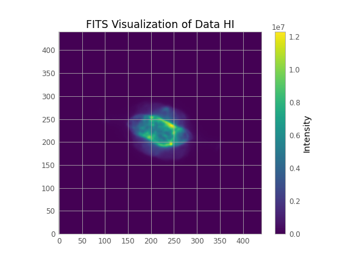

Mask
Table of Contents
from astropy.io import fits import numpy as np from maskfill import maskfill #download from github NOT pip import matplotlib.pyplot as plt from astropy.visualization import astropy_mpl_style from astropy.table import Table from astropy.stats import sigma_clip def masked_hn(mask): h_mask = np.ma.masked_where(mask, h_data) n_mask = np.ma.masked_where(mask, n_data) return h_mask, n_mask def vis(mask,name, mask_description): fname = "visualizations/mask_" + name + ".png" labels=[r"H$\alpha$ masked", "NII masked"] plt.style.use(astropy_mpl_style) # Create a figure with 1 row and 2 columns fig, axs = plt.subplots(1, 2, figsize=(13, 6)) for i in range(0,2): im = axs[i].imshow(masked_hn(mask)[i], cmap="viridis", origin='lower') axs[i].set_title(labels[i]) fig.colorbar(im, ax=axs, orientation='vertical',label='Intensity') fig.suptitle("FITS Visualization of Masked Data\nMask = {}".format(mask_description)) plt.savefig(fname) plt.close() return fname def vis_1(data, name): fname = "visualizations/" + name + ".png" plt.style.use(astropy_mpl_style) plt.imshow(data, cmap="viridis", origin='lower') plt.title("FITS Visualization of Data {}".format(name)) plt.colorbar(orientation='vertical',label='Intensity') plt.savefig(fname) plt.close() return fname def fill_vis(masked, original, filled, name, mask_description): fname = "visualizations/" + name + ".png" labels = ["Masked", "Original", "Maskfill"] data = [masked, original, filled[0]] #filled[1] = ImageHDU plt.style.use(astropy_mpl_style) # Create a figure with 1 row and 3 columns fig, axs = plt.subplots(1, 3, figsize=(12, 4)) for i in range(0,3): im = axs[i].imshow(data[i] , cmap="viridis", origin='lower') axs[i].set_title(labels[i]) fig.colorbar(im, ax=axs, orientation='vertical',label='Intensity') fig.suptitle("FITS Visualization of Masked Data and the Maskfill data of {}".format(mask_description)) plt.savefig(fname) plt.close() return fname
1. FITS files
h1 = fits.open('HI_6563s.fits') o1 = fits.open('O1_6300s.fits') n2 = fits.open('N2_6583s.fits') h1.info() n2.info() o1.info() h_data = h1[0].data n_data = n2[0].data o_data = o1[0].data h1.close() n2.close() o1.close()
- We don’t use
fits.getdata()because this way we can use more functions of the astropy library - Each FITS file has only one HDU (Header Data Unit), so we can get the data from the PrimaryHDU:
vis_1(h_data,"HI")

vis_1(n_data,"NI")

vis_1(o_data,"OII")

2. Masking the data
2.1. Masking condition
I use the condition mask = o_data > o_data.mean(), because if we use the condition mask = o_data !=0 we get a lot of noise asswell!
# Mask condition masks = [o_data!=0, o_data > o_data.mean(), o_data > o_data.mean() + o_data.std()]
2.2. Masking the H and N data
2.2.2. mask1 = odata > odata.mean()
vis(masks[1],"1", r"OII > $\overline{OII}$")

2.2.3. mask2 = odata > oclip.std()
vis(masks[2],"2", r"OII > $\overline{OII}$ + $\sigma$")

2.3. Pixel distribution (or “Why the σ mask is the best”)
If we see the pixel distribution we can see that we have a lot of “active” pixels in the low magnitudes of the OII. This most likely is the noise of our data and we should ignore it!
pixel_values = o_data.flatten()
fname = "visualizations/distr.png" # Create a histogram plt.hist(pixel_values , bins=150, log = True) plt.title('Pixel Distribution in OII FITS File') plt.xlabel('Pixel Value') plt.ylabel('Frequency') # Add vertical lines for mean and mean +/- std plt.axvline(0, color='black', linestyle='dashed', linewidth=2, label='0') plt.axvline(o_data.mean(), color='red', linestyle='dashed', linewidth=2, label= r'$\overline{OII}$'+'= {:.2f}'.format(o_data.mean()) ) plt.axvline(o_data.mean() + o_data.std(), color='green', linestyle='dashed', linewidth=2, label=r'$\overline{OII}$+ 1 $\sigma$ ='+'{:.2f} '.format(o_data.mean() + o_data.std())) plt.fill_betweenx(y=[0, plt.gca().get_ylim()[1]], x1 =0, x2 = o_data.mean() + o_data.std(), color='green', alpha=0.3) plt.axvline(o_data.mean() + 3* o_data.std(), color='pink', linestyle='dashed', linewidth=2, label=r'$\overline{OII}$+ 3 $\sigma$ ='+'{:.2f} '.format(o_data.mean() + 3* o_data.std())) plt.fill_betweenx(y=[0, plt.gca().get_ylim()[1]], x1 =o_data.mean() + o_data.std(), x2 = o_data.mean() + 3* o_data.std(), color='pink', alpha=0.6) plt.legend() plt.savefig(fname) plt.close() fname

(maybe it is better to use 3\(\sigma\))
3. Use Maskfill
h_masked = masked_hn(masks[2])[0] n_masked = masked_hn(masks[2])[1] h_fill = maskfill.maskfill(h_data, h_masked.mask,writesteps=False,output_file='H_fill.fits',verbose=True, smooth = False) n_fill = maskfill.maskfill(n_data, n_masked.mask,writesteps=False,output_file='N_fill.fits',verbose=True,smooth = False)
fill_vis(h_masked, h_data, h_fill, "HI_fill", "HI")

fill_vis(n_masked, n_data, n_fill, "NII_fill", "NII")